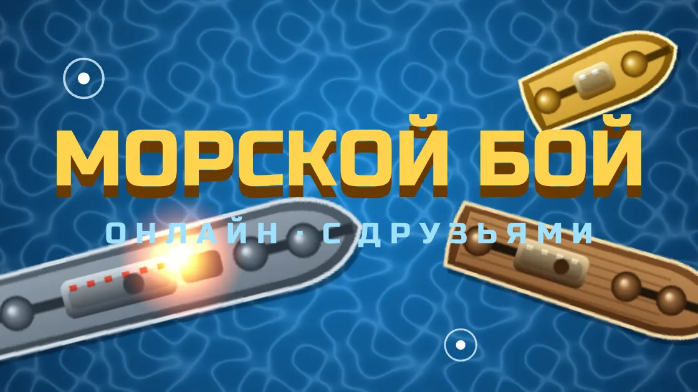
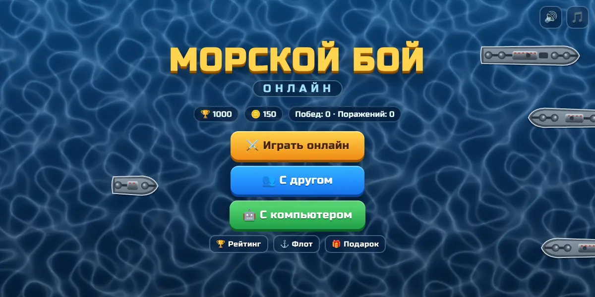
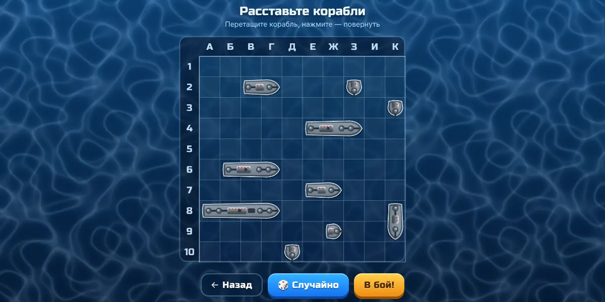

Морской бой онлайн — играть онлайн во ВКонтакте
Легендарная игра из школьной тетради — теперь онлайн и с настоящими соперниками.
Бесплатно · без всплывающей рекламы

Об игре
Об игре «Морской бой онлайн»
Сражайтесь с живыми игроками: соперник подбирается за секунды и по силе близок к вам. Хотите сыграть с другом — создайте комнату и отправьте ему приглашение или код. Хочется сыграть одному — тренируйтесь с компьютером.
Правила классические: поле 10×10, 10 кораблей (один четырёхпалубный, два трёхпалубных, три двухпалубных, четыре однопалубных), корабли не касаются друг друга. Попали — стреляете ещё раз. Побеждает тот, кто первым потопит весь флот соперника.

Особенности
Что есть в игре
- Бой с живым игроком — быстрый подбор соперника
- Игра с другом по приглашению или коду
- Игра с компьютером
- Быстрые фразы в бою и реванш одной кнопкой
- Общий рейтинг капитанов
- Флоты: стальной, пиратский, арктический, неоновый и золотой
- Подарок каждый день
- Без всплывающей рекламы

Играть
Как начать играть
- Нажмите «Играть во ВКонтакте» — игра откроется в приложении или браузере.
- Разрешите запуск игры — регистрация не нужна, прогресс сохраняется в вашем аккаунте ВКонтакте.
- Играйте на компьютере или телефоне.
Частые вопросы
Можно сыграть с другом?
Да: создайте комнату и отправьте другу приглашение или код.
Какие правила?
Классические: поле 10×10, 10 кораблей, корабли не касаются, при попадании — ещё один выстрел.
Другие игры и программы
Падающие шарики — игра во ВКонтакте: слияние шариков«Падающие шарики» во ВКонтакте: роняйте шарики в банку, одинаковые сливаются в шарик побольше. 11 размеров — о…Прыжок кометы — аркада во ВКонтакте: с орбиты на орбиту«Прыжок кометы» во ВКонтакте: одним касанием перепрыгивайте с орбиты на орбиту, собирайте звёзды и открывайте …Сортировка шариков по пробиркам — головоломка во ВКонтакте«Сортировка шариков» во ВКонтакте: разложите цветные шарики по пробиркам. Сотни уровней от 3 до 12 цветов, каж…Тетрис онлайн во ВКонтакте — играть бесплатноКлассический Тетрис во ВКонтакте: собирайте линии из падающих фигур, тень падения, запас фигуры и три следующи…Защита башен — Tower Defense во ВКонтакте: 60 уровней«Защита башен» во ВКонтакте: 5 башен, 8 видов врагов, 60 уровней в 6 мирах и общий чат. Пиксельная Tower Defen…Бот-кликер для Battlesmiths — клиент для Windows, демо 3 дняБот-кликер для игры Battlesmiths с клиентом под Windows. Демо-режим 3 дня бесплатно, продление на любое число …Бот для Dungeon Crusher («Крушители Подземелий») — автобой, фарм, заданияБот-кликер для Dungeon Crusher: Soul Hunters — автобой, сбор ресурсов, ежедневные задания и управление энергие…Бот для Catacombs World (BlueStacks) — фарм на автоматеБот-кликер для фарма в Catacombs World, работает с эмулятором BlueStacks на ПК. Скачать в теме ВКонтакте, паро…Бот для Gems of War — экспедиции по кругу, демо 3 дняБот для Gems of War: сам выставляет нужное разрешение игры и ходит экспедицию по кругу. Демо-режим 3 дня беспл…